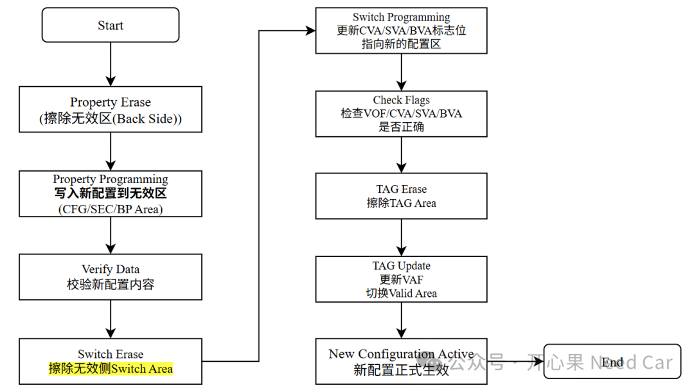

开心果 Need Car · 2026-09-20T06:20:00+08:00 · 微信原文
1.SSA是什么？
在 RH850芯片里（比如：U2A/U2C等），SSA（Security Setting Area）并不是一块普通的 Flash 存储区。它里面放的不是普通业务数据，而是会影响芯片安全行为的关键配置，比如：调试权限、ID 认证、Flash 访问保护、HSM/ICUM 相关选项等。也正因为它太关键，瑞萨没有允许软件像写普通 Data Flash 那样直接改它，而是设计了一套看起来有点繁琐、但非常可靠的更新机制：先写无效区，再切换有效区，最后执行 TAG Update 让配置正式生效。流程示意如下：

这套机制可以通俗地理解成“写草稿”和“盖章发布”。当前正在生效的 SSA 就像已经发布的正式文件，系统正在按照它运行，不能随便改。另一份无效的 SSA 就像草稿纸，软件可以先把新的配置写进去。等确认草稿写完整、内容没有问题，再通过 Switch Area 告诉硬件：“下一次请使用这份新的配置。”最后通过 TAG Update 盖章确认，新的 SSA 才真正成为有效配置。
为什么不能直接改当前有效 SSA？原因很简单：风险太高。SSA 控制的是安全相关功能。如果直接改正在生效的区域，万一写到一半掉电、程序异常、地址算错，芯片可能留下一个半新半旧的安全配置。轻则启动异常，重则调试器连不上、RFP 无法认证，甚至让板子进入很难恢复的状态。对于安全配置来说，“写一半”往往比“没写”更危险。
2.RH850/U2x系列的双区机制
所以 RH850/U2x系列 采用了双区机制。Area 0 和 Area 1 中只有一份是当前 valid，另一份是 invalid。更新时只写 invalid side，不碰当前 valid side。这样即使更新失败，旧配置仍然在，芯片还能继续按原来的安全策略运行。只有当新配置写完，并且 Switch Area 和 TAG Area 都按规则更新后，硬件才会切换到新配置。这就像数据库事务里的提交：提交之前失败，可以回到旧状态；提交成功后，新状态才正式生效。
SSA 里面还有一个容易误解的地方：并不是所有地址都能写。手册里的 Security Settings Area 表格明确列出，前面很多区域是 SSAVOF、SSAVOFC、VOF Program completion flag 等标志位，标着 “Can not Write”。这些区域不是用户直接写的，而是硬件或 Flash sequencer 根据 Property Program 的结果自动维护。用户真正应该写的是后面的 Property 数据区，比如 <SSAk_base> + 0x0200 之后的一些 32 字节配置块。
这也是为什么程序里不能把 SSA 当成一整块 0x0000 到 0x07FF 的普通内存去写。正确做法是只操作手册允许的 32-byte group。例如 group 40 实际对应的是 <SSAk_base> + 0x0700 到 <SSAk_base> + 0x071F，而不是前面 <SSAk_base> + 0x00A0 的 SSAVOF40 标志区。前者是要写入的配置数据，后者是不能直接操作的有效标志。把这两个搞混，就可能写错区域，或者触发不可预期的结果。
3.TAG Update
再看 TAG Update，它的作用不是“多此一举”，而是最后的生效确认。写 invalid SSA 只是把新内容准备好了，Switch Area 只是声明哪个 area 应该成为下一份有效配置，TAG Update 才是让硬件承认这次切换的关键动作。没有 TAG Update，新配置可能只是写进去了，但还不会成为真正有效的 SSA。
4.如何使能HSM(ICUM)
如果使用 Renesas Flash Programmer，也就是 RFP，很多步骤会被工具封装起来。用户可能只是在界面上配置 Option 或 Security Setting，然后点击 Program 或 Apply，RFP 背后就完成了 Property Program、Switch Area 更新和 TAG Update。看起来简单，是因为工具帮你做了底层流程。但如果由 Host 程序在运行时自己更新 SSA，就必须显式调用驱动 API，把这些步骤一步步走完。
那么什么时候适合用 RFP，什么时候适合让 Host 程序自己做？如果只是开发阶段、产线烧录阶段一次性配置安全选项，用 RFP 更直观，也更容易管理。如果产品需要现场升级、批量自动化测试、或者运行时根据状态调整安全配置，那就更适合让 Host 代码执行完整流程。
流程如下所示：
- R_RFD_ShiftToPEMode(R_RFD_FACI0, R_RFD_MODE_DFPE)- R_RFD_EraseSwitchRequest()- R_RFD_WriteSwitchRequest()- R_RFD_EraseTagRequest()- R_RFD_UpdateTagRequest()- R_RFD_ShiftToReadMode()
（一）FHVE Protection
FHVE Protection （Flash High Voltage Enable Protection）是 RH850 用来防止误写 Flash 的硬件软件联合保护机制，只有同时置位 FHVE3FPn 和 FHVE15FPn，Flash 编程和擦除操作才被允许执行。
1. 设置 FLMDCNT.SFWE = 1↓2. 进入 Flash P/E ModeFENTRYR = 0001h (Code Flash)或FENTRYR = 0080h (Data Flash)↓3. FHVE3FPn = 1FHVE15FPn = 1↓4. 执行 Program/Erase FACI Command↓5. 编程完成↓6. FHVE3FPn = 0FHVE15FPn = 0↓7. 返回 Read Mode
上述 3~4 步就是所谓的 FHVE Protection Unlock → Programming → Lock。
（二）Flash 为什么需要高压
Flash 的存储单元是 Floating Gate。Read（读取）: 正常工作电压即可。
Program（编程）: 需要较高电压把电子注入 Floating Gate。Erase（擦除）: 需要较高电压把电子抽出。这些高压通常由 MCU 内部 Charge Pump 产生，不需要外部提供。软件只负责告诉 Flash Controller："现在允许进行 Program/Erase 操作。"然后 MCU 内部自动产生所需高压。
更多细节可以参考前文《说一说Flash硬件的基本工作原理》。
总结一句话：SSA 更新之所以麻烦，是因为它很重要。先写 invalid side，是为了不破坏当前有效配置；只写允许的 32-byte group，是为了不碰硬件管理的标志区；最后执行 TAG Update，是为了让新配置以受控方式正式生效。这套流程看起来绕，但它换来的是可恢复、可验证、可保护的安全配置更新。
往期精彩回顾